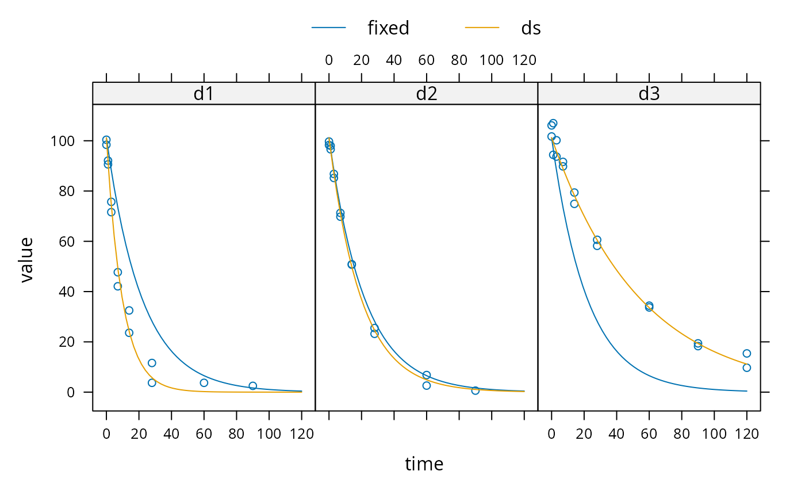

These functions facilitate setting up a nonlinear mixed effects model for
an mmkin row object. An mmkin row object is essentially a list of mkinfit
objects that have been obtained by fitting the same model to a list of
datasets. They are used internally by the nlme.mmkin() method.
Examples
sampling_times = c(0, 1, 3, 7, 14, 28, 60, 90, 120)
m_SFO <- mkinmod(parent = mkinsub("SFO"))
d_SFO_1 <- mkinpredict(m_SFO,
c(k_parent = 0.1),
c(parent = 98), sampling_times)
d_SFO_1_long <- mkin_wide_to_long(d_SFO_1, time = "time")
d_SFO_2 <- mkinpredict(m_SFO,
c(k_parent = 0.05),
c(parent = 102), sampling_times)
d_SFO_2_long <- mkin_wide_to_long(d_SFO_2, time = "time")
d_SFO_3 <- mkinpredict(m_SFO,
c(k_parent = 0.02),
c(parent = 103), sampling_times)
d_SFO_3_long <- mkin_wide_to_long(d_SFO_3, time = "time")
d1 <- add_err(d_SFO_1, function(value) 3, n = 1)
d2 <- add_err(d_SFO_2, function(value) 2, n = 1)
d3 <- add_err(d_SFO_3, function(value) 4, n = 1)
ds <- c(d1 = d1, d2 = d2, d3 = d3)
f <- mmkin("SFO", ds, cores = 1, quiet = TRUE)
mean_dp <- mean_degparms(f)
grouped_data <- nlme_data(f)
nlme_f <- nlme_function(f)
# These assignments are necessary for these objects to be
# visible to nlme and augPred when evaluation is done by
# pkgdown to generate the html docs.
assign("nlme_f", nlme_f, globalenv())
assign("grouped_data", grouped_data, globalenv())
library(nlme)
m_nlme <- nlme(value ~ nlme_f(name, time, parent_0, log_k_parent_sink),
data = grouped_data,
fixed = parent_0 + log_k_parent_sink ~ 1,
random = pdDiag(parent_0 + log_k_parent_sink ~ 1),
start = mean_dp)
summary(m_nlme)
#> Nonlinear mixed-effects model fit by maximum likelihood
#> Model: value ~ nlme_f(name, time, parent_0, log_k_parent_sink)
#> Data: grouped_data
#> AIC BIC logLik
#> 266.6428 275.8935 -128.3214
#>
#> Random effects:
#> Formula: list(parent_0 ~ 1, log_k_parent_sink ~ 1)
#> Level: ds
#> Structure: Diagonal
#> parent_0 log_k_parent_sink Residual
#> StdDev: 0.0003775775 0.7058039 3.065183
#>
#> Fixed effects: parent_0 + log_k_parent_sink ~ 1
#> Value Std.Error DF t-value p-value
#> parent_0 101.18323 0.7900461 43 128.07257 0
#> log_k_parent_sink -3.08708 0.4171755 43 -7.39995 0
#> Correlation:
#> prnt_0
#> log_k_parent_sink 0.031
#>
#> Standardized Within-Group Residuals:
#> Min Q1 Med Q3 Max
#> -2.38427070 -0.52059848 0.03593021 0.39987268 2.73188969
#>
#> Number of Observations: 47
#> Number of Groups: 3
plot(augPred(m_nlme, level = 0:1), layout = c(3, 1))

# augPred does not work on fits with more than one state
# variable
#
# The procedure is greatly simplified by the nlme.mmkin function
f_nlme <- nlme(f)
plot(f_nlme)